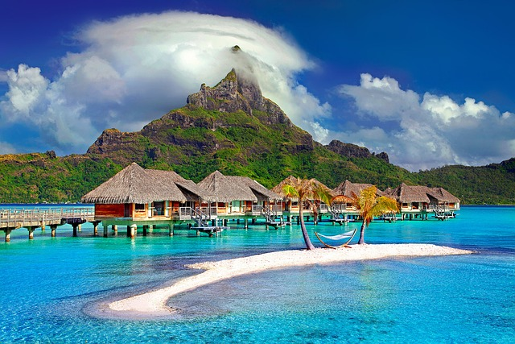

Taj Mahal
The Taj Mahal is a white tomb built in the 17th century by the Mughal emperor, Shah Jahan in memory of his wife, Mumtaz Mahal. The building is in the city of Agra, Uttar Pradesh. Widely thought as one of the most beautiful buildings in the world, it is one of India's biggest tourist attractions. It is listed as a UNESCO World Heritage Site, together with the Agra Fort, 2.5 kilometers away. It was listed as one of the 7 Wonders of the World in 2007.It is located on the south bank of Yamuna river in Agra.

great barrier
One of Australia’s most remarkable natural gifts, the Great Barrier Reef is blessed with the breathtaking beauty of the world’s largest coral reef. The reef contains an abundance of marine life and comprises of over 3000 individual reef systems and coral cays and literally hundreds of picturesque tropical islands with some of the worlds most beautiful sun-soaked, golden beaches.Because of its natural beauty, the Great Barrier Reef has become one of the worlds most sought after tourist destinations.

salar de uyuni
Description Salar de Uyuni, amid the Andes in southwest Bolivia, is the world’s largest salt flat. It’s the legacy of a prehistoric lake that went dry, leaving behind a desertlike, nearly 11,000-sq.-km. landscape of bright-white salt, rock formations and cacti-studded islands. Its otherworldly expanse can be observed from central Incahuasi Island. Though wildlife is rare in this unique ecosystem, it harbors many pink flamingos.

antelope canyon
Antelope Canyon is a slot canyon in the American Southwest. It is on Navajo land east of Page, Arizona. Antelope Canyon includes two separate, scenic slot canyon sections, referred to individually as "Upper Antelope Canyon" or "The Crack"; and "Lower Antelope Canyon" or "The Corkscrew".The Navajo name for Upper Antelope Canyon is Tsé bighánílíní.Lower Antelope Canyon is Hazdistazí. Both are in the LeChee Chapter of the Navajo Nation.The canyons are accessible by guided tour only.
reed flute cave
Reed Flute Cave got its name from the verdant reeds growing outside it, with which people make flutes. Actually, inside this water-eroded cave is a spectacular world of various stalactites, stone pillars and rock formations created by carbonate deposition. Illuminated by colored lighting, the fantastic spectacle is found in many variations. Walking through the serried stone pillars, tourists feast their eyes on changing spots, feeling they are in a paradise where the Gods live.

Great Blue Hole
The Great Blue Hole is a giant marine sinkhole off the coast of Belize. It lies near the center of Lighthouse Reef, a small atoll 70 km from the mainland and Belize City. The hole is circular in shape, 318 m across and 124 m deep.It was formed during several episodes of quaternary glaciation when sea levels were much lower. The Great Blue Hole is a part of the larger Belize Barrier Reef Reserve System, a World Heritage Site of the United Nations Educational, Scientific and Cultural Organization.

Bora Bora
Description Bora Bora is a small South Pacific island northwest of Tahiti in French Polynesia. Surrounded by sand-fringed motus (islets) and a turquoise lagoon protected by a coral reef, it’s known for its scuba diving. It's also a popular luxury resort destination where some guest bungalows are perched over the water on stilts. At the island's center rises Mt. Otemanu, a 727m dormant volcano.
pamukkale
Pamukkale is a town in western Turkey known for the mineral-rich thermal waters flowing down white travertine terraces on a nearby hillside. It neighbors Hierapolis, an ancient Roman spa city founded around 190 B.C. Ruins there include a well-preserved theater and a necropolis with sarcophagi that stretch for 2km. The Antique Pool is famous for its submerged Roman columns, the result of an earthquake.
victoria waterfalls
One of the greatest attractions in Africa and one of the most spectacular waterfalls in the world, Victoria Falls is located on the Zambezi River, the fourth largest river in Africa, which is also defining the border between Zambia and Zimbabwe.Victoria Falls is the only waterfall in the world with a length of more than a kilometer and a height of more than hundred meters. It is also considered to be the largest fall in the world.